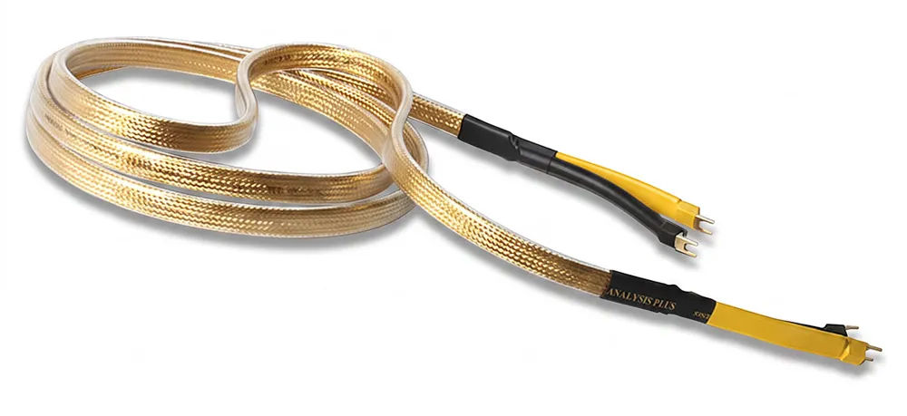

Lautsprecherkabel
Gold Oval
Das Spitzenmodell. Reines Gold über sauerstofffreiem Kupfer in der Hohloval-Geometrie, voll geschirmt und mit FEP-Dielektrikum. Ein Kabel für Generationen.
- Gold über OFC, Litzenaufbau
- 100 % Schirmung
- Bananas oder T1-Kabelschuhe
- 1,2 bis 3 m